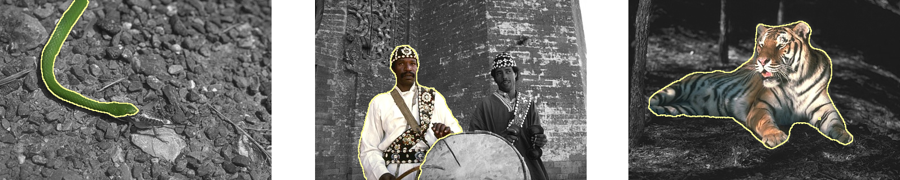

Abstract
Geometric priors have been shown to be useful in image segmentation to regularize the results. For example, the classical Mumford–Shah functional uses region perimeter as prior. This has inspired much research in the last few decades, with classical approaches like the Rudin–Osher–Fatemi and most graph-cut formulations, which all use a weighted or binary perimeter prior. It has been observed that this prior is not suitable in many applications, for example for segmenting thin objects or some textures, which may have high perimeter/surface ratio. Mumford observed that an interesting prior for natural objects is the Euler elastical model, which involves the squared curvature. In other areas of science, researchers have noticed that some physical binarization processes, like emulsion unmixing, can be well-approximated by curvature-related flow like the Willmore flow. However, curvature-related flows are not easy to compute because curvature is difficult to estimate accurately, and the underlying optimization processes are not convex. In this article, we propose to formulate a digital flow that approximates an Elastica-related flow using a multigrid-convergent curvature estimator, within a discrete variational framework. We also present an application of this model as a post-processing step to a segmentation framework.
Authors: Daniel Martins Antunes, Jacques-Olivier Lachaud and Hugues Talbot.

GitHub Project
The BTools project implements the segmentation algorithm with curvature regularization described in the paper.